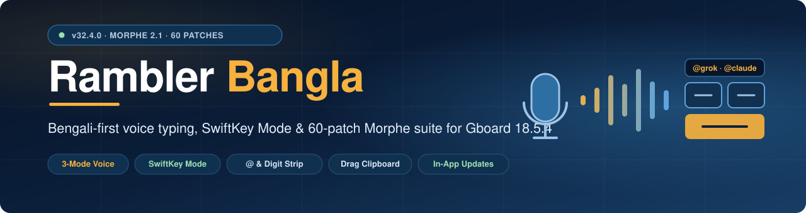
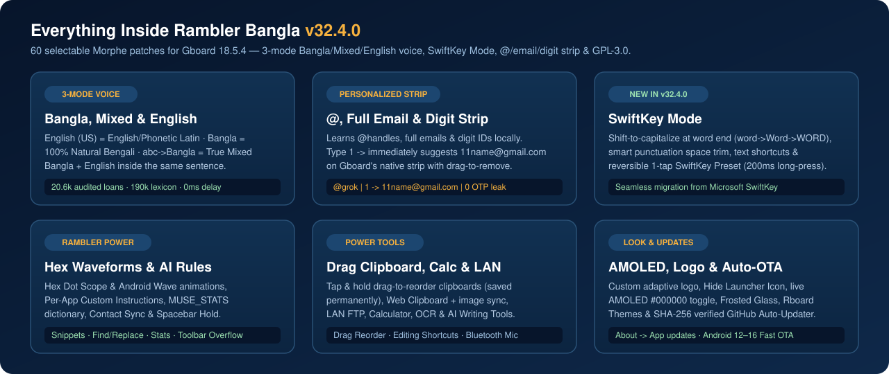

Dictate in Bangla.
Get Bangla.
A fail-closed, 60-patch Morphe suite for Gboard 18.5.4 (plus the legacy 18.3.1 standalone patcher) with true 3-keyboard Bangla / Mixed / English Rambler+ voice typing, SwiftKey Mode for seamless SwiftKey-to-Gboard migration, instant @ / full-email / 1-digit personalized suggestions, SHA-256 verified in-app updates, AMOLED Dark toggle, and Clipboard Drag-to-Reorder. GPL-3.0.
Stock voice cleanup
ami bhalo achi
With Rambler Bangla
আমি ভালো আছি
Illustration with synthetic text, not a device screenshot.
What it is and why
One unified Morphe 2.1 source: 3-mode Bangla/Mixed/English dictation, SwiftKey Mode, instant personalized strip, in-app updates, and 60 conflict-free Gboard power patches.
Gboard's on-device voice cleanup tends to rewrite Bengali dictation into Latin letters, mangles mixed Bangla + English sentences, hides Rambler+ behind rollout gates, removed Hide app icon, gives zero suggestions after digits or @, and misses everyday SwiftKey habits. Rambler Bangla v32.4.0 combines a 60-patch Morphe 2.1 suite for Gboard 18.5.4 (live Gemini Rambler+ Bangla Academy & Mixed prompting, 20,609 CMU-validated Aksharantar loanwords + 190k-lexicon trailing-ো/homophone/conjunct repair, SwiftKey Mode under Patches → Keyboard, instant @mention / full-email / 1-digit personalized strip, SHA-256 verified in-app GitHub auto-updater under About → App updates, live AMOLED Dark toggle, and persistent Clipboard Drag-to-Reorder) alongside the original fail-closed Gboard 18.3.1 Python smali patcher.
Honest status. Automated CI proves 88 Python unit tests, 22 static fixture checks, 316 Gradle patch tests, Android extension lint/tests, Morphe CLI 60/60 patching + strict JADX checks, and real Android 15 KVM ART dex2oat verification + live IME smoke tests. Live microphone ASR results come from the maintainer's own phone.
Features
Everything inside Rambler Bangla v32.4.0 (60 selectable Morphe patches), with the evidence level stated for each.

3-Mode Bangla / Mixed / English Voice
Only 3 keyboards needed:
CI + EmulatorEnglish (US)stays strictly English / phonetic Latin even when speaking Bangla;বাংলাoutputs 100% natural Bengali Unicode (20,609 CMU-validated Aksharantar loanwords + full-lexicon homophone/conjunct/trailing-ো repair);abc → বাংলাdelivers true intra-sentence Mixed Bangla + English with 25k Shift-free Banglish support.
22 end-to-end checks, 60 Morphe patchesSwiftKey Mode (Migration Toggle)
Dedicated 1-tap toggle under Patches → Keyboard → SwiftKey Mode: in-place Shift-to-Capitalize word at cursor (
CI + Emulatorword → Word → WORD → wordvia Double-tap or Single-tap Shift without highlighting), smart space trim before punctuation, custom text-expansion shortcuts (!email,@@,addron the native strip), and a reversible 1-tap SwiftKey Preset (Number row, Long-press symbols, snappy 200 ms long-press, Auto-space, Double-space period, Swipe-dismiss, Shift+Delete & Extended Clipboard).
JADX-verifiedphr.dGhook · reversibleInstant @Mention, Full-Email & 1-Digit Strip
100% personalized
CI + Emulator@handles(@grok),@domains, full emails, and digit-starting IDs on Gboard's native strip — typing just1immediately suggests11name@gmail.com(matching AMOLED, Material You, Frosted Glass & Custom Themes with native drag-up-to-remove and strict password/PIN/OTP/incognito protection).
Learns on-device · native stripIn-App Auto-Updater (About), Redesigned Patches & Logo
Toggleable Auto-check for updates + 1-tap SHA-256-verified GitHub Release installer under Settings → About → App updates, cleanly organized 4-section Patches tab, custom adaptive Rambler Bangla (র) app logo, and 1-tap Hide launcher icon under Patches → Keyboard.
CI + Emulator
SHA-256 verified · zero browser neededRambler+ & Enhancements
Unconditional Rambler+ activation under Voice typing, Hex waveforms, custom per-app instructions, MUSE_STATS dictionary, contacts sync, cursor-aware editing, snippets, stats & toolbar overflow.
CI + Emulator
Verified on Gboard 18.5.4 (API 35 KVM)Live AMOLED Dark & Clipboard Reorder
Live Settings toggle for pure #000000 Material You AMOLED dark (default OFF for normal dark-gray contrast), persistent tap-and-hold Clipboard Drag-to-Reorder, quick-paste chip, and live OVERRIDE-store hidden flags.
CI + Emulator
JADX-verifiedrmt&fqihooks46 Gboard Power Features
Frosted Glass blur, Custom Themes, Rounded Panel, Key Shape, Clipboard Enhancements, Web Clipboard, LAN FTP, Calculator, OCR, AI Writing Tools, Bluetooth Mic, Backup & Restore.
CI + Emulator
Integrated from Gboard Patches (GPL-3.0)Own package id
Installs side-by-side as
Android 15 KVMcom.aidev2024.ramblerbanglabeside stock Gboard with persistent signing so in-place upgrades preserve all settings & learned entries.
See SIDE-BY-SIDE.md
How it works
Both the 60-patch Morphe 2.1 suite (Gboard 18.5.4) and the legacy 18.3.1 standalone patcher verify exact anchors and fingerprints before writing bytecode.
Fingerprint guard
SHA-256 string hashes and method anchors verify exact Gboard targets (
fja.d/ezn.b,rmt,fqi,pbh/pbo/phr) before patching.Dexlib2 / Smali patch
Morphe Dexlib2 hooks (18.5.4) or standalone smali hooks (18.3.1) wire the runtime with stock rule strings preserved as fail-safe inputs.
Extension & policy runtime
Compiled
.rveAndroid extensions + pure-Java Bengali phonetic, loanword, native@mention, and clipboard reorder logic with zero tracking.Verify
Strict JADX decompile checks, 315 Gradle patch tests, Android 15 ART
dex2oat+ IME smoke tests, and offlinescripts/verify_apk.sh.
Any miss at step 1: FAIL-CLOSED ABORT, exit status 2, no output written. Full design in ARCHITECTURE.md.
Device-free CI & Emulator Smoke
Automated proof on every push and pull request — plus real Android 15 KVM ART verification on release candidates.
Every push and pull request runs both the Morphe Gradle & Android extension test suite and the zero-Google synthetic APK static suite on GitHub Actions.
- Morphe patches & Android extensions: 315 Kotlin Dexlib2/contract tests (
:patches:test), capability wiring verification, extension unit tests, and Android Lint. - Python unit tests (88 tests, stdlib only): patcher helpers, loanword table sync, and checks keeping README and this page honest.
- Static suite, 22 checks: 51 policy assertions, synthetic fixture build, end-to-end patch, fail-closed negatives (exit 2 with no APK), APK v2 signing, astral-label rename round-trip, and
verify_apk.sh. - Android 15 KVM ART + IME smoke test: real
cmd package compile -m verify -fART verification + live IME activation ensuring zeroVerifyErroror startup crashes.
Live microphone ASR quality is verified on the maintainer's physical device and documented in VALIDATION.md.
Build from source
JDK 21, Android SDK 35/36, and Python 3. Targets Gboard 18.5.4.993608717-release-arm64-v8a via Morphe (60 patches) and legacy Gboard 18.3.1.977415014 beta via the standalone smali patcher. Unprofiled builds are refused.
# 1. Build unified 60-patch Morphe bundle (.mpp) for Gboard 18.5.4
./gradlew :extensions:extension:syncExtension \
:extensions:calculator:syncExtension \
:extensions:rambler-enhancements:syncExtension \
:patches:verifyGboardCapabilityWiring :patches:test \
:patches:buildAndroid generatePatchesList
# 2. Legacy 18.3.1 Python unit tests + pinned static suite
python3 -m unittest discover -s tests/python -v
python3 -m pip install androguard==4.1.4
bash scripts/bootstrap_tools.sh && source tools/tool-env.sh
bash tests/run_tests.sh # TEST SUITE: 22 passed, 0 failedFull Morphe CLI patching, signing, installing and exit codes: README and user guide.
Safety: fail-closed by design
The patcher would rather do nothing than guess.
- Exact build or nothing. Any fingerprint, anchor or dataflow miss exits 2 and writes no APK.
- No double patching. An already patched APK is refused.
- Hash-based profile. SHA-256 hashes plus short identifying fragments; the full prompt text is never reproduced.
- Never signs, never uploads. Patcher and verifier run offline; you sign with your own key.
- No network code in the patch layer, and diagnostics are off by default and stay on your phone.
- On-device path only. Bangla is not on Google's cloud rewrite list, so only the on-device cleanup path changes. It does not add Bangla to Google's cloud service.
2-Minute Setup & 3-Keyboard Dictation Guide
Install the APK (or patch via Morphe), enable Rambler+ under Voice typing, and keep only these 3 keyboards in Languages — no Bangla (Latin) needed:
| Layout | Result |
|---|---|
| English (US) | All English / Phonetic Latin: stays strictly in English / phonetic ASCII Latin even when speaking Bangla. |
| বাংলা (native) | 100% Pure Bangla: natural Bengali Unicode script (ইংলিশ, আন্ডারস্ট্যান্ডস, ক্লিয়ারলি, কোম্পানি). |
| abc → বাংলা | True Mixed Bangla + English: spoken Bangla words/clauses come out in বাংলা while English words/clauses stay in English — even inside the same sentence. |
Source only, no APKs in git
Zero proprietary binaries or signing keys are ever committed to this repository.
Every Morphe user obtains an official Gboard 18.5.4 APK (or legacy 18.3.1 APK for the standalone patcher) themselves, applies the open-source patches with Morphe Manager / CLI or the standalone patcher, and signs with their own key. Morphe patch bundles (patches-*.mpp) and legacy tagged source releases such as v29.4 follow the standard Morphe distribution model.
Legal note. Rambler Bangla is an independent project. Not affiliated with Google, nor endorsed or sponsored by it, nor affiliated with Morphe. Gboard is a trademark of Google LLC, named only to identify the target app. The repository holds no Google binaries, keys, model files or full prompt text; the profile keeps SHA-256 hashes plus short identifying fragments. Modifying software may be restricted by its terms or by local law; checking that is your responsibility, and the software comes with no warranty (GPL-3.0). Details: LICENSING-AUDIT.md.
FAQ
How do I install Rambler Bangla with Morphe?
Tap Add Patch Source to Morphe (or paste https://raw.githubusercontent.com/muhib-karim/Rambler-Bangla/main/patches-bundle.json in Morphe Manager), pick official Gboard 18.5.4.993608717-release-arm64-v8a, choose your patches, and tap Patch.
How do the 3 keyboard dictation modes work?
You only need 3 standard keyboards: English (US) outputs English / phonetic Latin even when speaking Bangla; বাংলা outputs 100% Bengali Unicode (including loanwords); and abc → বাংলা delivers true intra-sentence Mixed Bangla + English. No Bangla (Latin) keyboard is needed.
Can I hide the launcher app icon like old Gboard?
Yes! Open Settings → Patches → Keyboard and toggle Hide launcher icon directly. Settings remain reachable anytime from the keyboard's gear button or Android System → Keyboard settings.
Can I toggle AMOLED Dark Keyboard ON or OFF without repatching?
Yes! AMOLED Dark Keyboard (#000000) defaults to OFF so Gboard's Material You dark theme keeps its normal layered dark-gray contrast. Open Settings → Patches → Keyboard → Appearance & Theme to toggle pure #000000 AMOLED Dark anytime.
Where is the In-App GitHub Auto-Updater?
Open Settings → About → App updates to toggle Auto-check for updates or tap Check for updates now for SHA-256 verified 1-tap updates straight from GitHub Releases.
How does Clipboard Drag-to-Reorder work?
Open Gboard's Clipboard panel, tap and hold any item, and drag in any direction to rearrange within Pinned or Recent — saved permanently across reopens and reboots (toggle anytime under Settings → Patches → Clipboard & Sharing → Clipboard). Stationary tap-and-hold (without dragging) still opens the Pin/Paste/Delete popup, and swiping left/right still deletes with Undo.
How do personalized @mention suggestions work?
Whenever you type or dictate @handles (like @grok, @claude) or email domains (@gmail.com), Rambler Bangla learns them on-device and injects them directly into Gboard's own native suggestion strip (matching AMOLED, Material You, Frosted Glass & Custom Themes, with native drag-up-to-remove). Password and incognito fields are always skipped.
Why pinned to Gboard 18.5.4 (Morphe) and 18.3.1 (legacy)?
The hooks target obfuscated code whose class/method names change between Gboard releases. Verifying exact versions, anchors, and SHA-256 fingerprints is what makes patching fail-closed and safe.
What happens with an unsupported Gboard version?
The patcher fails closed (FAIL-CLOSED ABORT, exit status 2) and writes no output rather than producing a half-patched APK.
Does it send my voice or text anywhere?
The Rambler Bangla patch layer has zero telemetry or network code. Learned @mentions, rules, and voice dictionary entries stay local on your device. Gboard's own behaviour is outside this project's audit.
Does it translate English into Bangla?
No. English words spoken inside Bangla sentences get a Bangla spelling (company → কোম্পানি); pure English sentences are left untouched.
Roadmap & Releases
Latest release: v32.4.0 (60-patch Morphe suite for Gboard 18.5.4; supersedes v32.3.0 and legacy standalone v29.4).
Release milestones & verification
| Release | Highlights & Verification |
|---|---|
| v32.4.0 (Latest) | SwiftKey Mode, Instant Full-Email & 1-Digit Personalized Strip, and Systemic Bangla Overhaul: adds SwiftKey Mode under Patches → Keyboard (in-place Shift word-case cycling at cursor, smart punctuation space trim, custom text-expansion shortcuts on the native strip & reversible 1-tap SwiftKey Preset with snappy 200 ms long-press); upgrades @Mention, Email & Digit Strip so typing 1 immediately suggests learned full emails like 11name@gmail.com (fail-closed on passwords/PIN/OTP/incognito); runs a CMU phonetic audit across all 20,609 Aksharantar loanwords (purging Banglish homograph hijacks like these→ঠেসে, will→বলল, who→ভিওএ); and adds generalized trailing-ো, full-lexicon homophone & missing-hasanta repair (পৌষ মাস, ফাল্গুন মাস, চৈত্র মাস, আগের চেয়ে, কিবোর্ডে). |
| v32.3.0 | Language-Wide Missing-Hasanta Conjunct Repair, 25k Mixed Banglish & App Updates Note: adds hasanta-tolerant & nasal+sibilant (নশ→ংশ) Level-3 repair + expanded source conjuncts (হচছে→হচ্ছে, যাচছে→যাচ্ছে, কিনতু→কিন্তু, আনশতুকু→অংশটুকু), adds -তেশি→-তেছি verb endings (বলতেশি→বলতেছি), contextual এখান→এখন (preserving এখান থেকে), মনে হচ্ছে / পুরোপুরি / বাংলাটা, wires the 25k Banglish dictionary into Mixed abc → বাংলা classification, and adds a clear 20–30 second Android install wait note on App updates. |
| v32.2.0 | Zero Loanword Cold-Miss, True Multilingual Mixed Bangla+English & Faster OTA Updates: preloads the 17,841-word English loanword engine on mic tap with a 150 ms warm wait (eliminating cold-miss কলিএনত / এভেরয়থিং), adds 9 systematic CMUdict fixes + 60+ natural Bangladeshi loanwords (ক্লায়েন্ট, এভরিথিং, অ্যান্ড্রয়েড, ফ্লুয়েন্সি, মাল্টিলিঙ্গুয়াল), converts Bengali words even inside English-heavy abc → বাংলা mixed clauses, auto-joins lexicon-valid hyphenated suffixes (কাল-কে → কালকে while preserving বাংলা-ইংলিশ), and enables Android 12+ INSTALL_SCENARIO_FAST + 256 KB staging for faster in-app updates. |
| v32.1.0 | Language-Wide L3/L4 Dental-Retroflex, Jofola & Colloquial Verb Orthography Engine: eliminates illegal ্য় jofola at source & post-commit (ব্য়াপার → ব্যাপার), adds Level-3 dental↔retroflex (ট/ঠ/ত/থ, ড/ঢ/দ/ধ), initial আ↔অ, ৈ→ই, colloquial -তেসি/-তেসে → -তেছি/-তেছে verb repair, and Level-4 vowel-tolerant matching (ফাতাফাতি → ফাটাফাটি, থিকমতো → ঠিকমতো, একদাম → একদম, আবস্থা → অবস্থা, সবৈ → সবই, লিখতেসি → লিখতেছি) across 25,000+ spoken words with zero false positives. |
| v32.0.0 | Live Gemini Rambler+ Bangla Academy Prompting, 0 ms Lexicon & Slimmer APK: injects active-keyboard (বাংলা / abc → বাংলা) Bangla Academy Unicode script rules straight into Gemini Rambler+'s live <custom_instruction> on every mic tap, makes the 89,556-word Bengali lexicon 100% non-blocking (0 ms dictation delay, <60 ms preload), fixes সব-i → সবই (all Unicode dashes), হৈতেচে → হচ্ছে, বানানটা & ঠিকমতো, and slims the APK by ~3.9 MB via preview asset optimization. |
| v31.9.0 | Full-Language 190,405-Word Bengali Orthography Engine & Android 14–16 OTA Fix: bundled OpenBangla + LibreOffice bn_BD + spoken-frequency phonetic-skeleton spell engine (Level-1 homophones, Level-2 aspiration/ব্য↔বে/geminates, agglutinative suffix repair, zero false positives), plus fixed Android 14–16 PackageInstaller BAL suppression via async background staging, explicit foreground BroadcastReceiver, 10s watchdog & Save-to-Downloads fallback. |
| v31.8.0 | Foolproof Pure Bangla & Mixed Orthography Engine: added GboardRamblerBanglaNormalizer running on 100% of Bengali commits (post-LLM pure Bengali & post-ASR), fixing -আই → -ই enclitics (সবকিছুই), শবকিছু → সবকিছু, বুযে → বুঝে, ভালে → ভালো, সুন্দরভাবে, হোয়াটেভার, ফোনেটিকস, রাইট নাও, double-nukta cleanup, and Pure Bangla Bengali dari (।). |
| v31.7.0 | Original Rambler Bangla Patches UI & Complete Keyboard Migration: redesigned the Patches tab with a Deep Navy / Ocean / Amber brand theme (hero banner, bordered cards, amber-bar section headers, zero upstream circular icon badges), promoted AMOLED Dark, @Mention & Email Strip, and Hide launcher icon to 1-tap toggles under Patches → Keyboard, moved Quick-paste chip + Drag-to-reorder clips to Patches → Clipboard, kept Rambler Enhancements purely voice-focused, and hardened explicit launch on Settings → About → App auto-updates. |
| v31.6.0 | Initial move of App updates under Settings → About and 4-section Patches organization. |
| v31.5.0 | Pure Bangla natural spelling overhaul (70+ curated loanwords + Avro Tier-1 priority + CMUdict cleanup + hyphenated enclitic সব-ই), SHA-256 verified In-App GitHub Auto-Updater, and 2-minute beginner setup guide. |
| v31.4.0 | True 3-keyboard active-mode dictation (English (US) / বাংলা / abc → বাংলা), custom adaptive Rambler Bangla (র) app logo, and live Hide launcher icon toggle (Issue #39). |
| v31.3.1 | Fixed ART VerifyError in Lrmt.<init>; live AMOLED Dark toggle (default OFF); persistent 4-direction Clipboard Drag-to-Reorder (60 patches). |
| v31.2.0 | Native Gboard suggestion-strip integration for 100% personalized @mentions (zero overlay, automatic theme matching, native drag-up-to-remove) + full GPL-3.0/MIT/MPL-2.0/BSD/§7c audit. |
| v31.1.0 | 100% personalized standalone @ learning across typing & dictation + persistent maintainer signing key (679cfdec...) for in-place upgrades. |
| v31.0.0 | Unconditional Rambler+ activation fix, live Gboard locale handoff (fhv.w()), and nl-morphe-patches 18.5.4 integration (59 patches). |
| v30.0.0 | First unified 55-patch Morphe 2.1 bundle combining Rambler Bangla, Gboard Rambler Enhancements, and Gboard Patches (GboardWu) on Gboard 18.5.4. |
| v29.4 | Legacy Gboard 18.3.1 standalone source release and new maintainer signing key. |
Next
- Track Gboard
18.8.xstable bindings once upstream Morphe patches stabilize targets. - Intra-sentence multilingual clause segmentation and higher Bangla loanword precision.
- Automated multi-device UI regression screenshots via Firebase Test Lab Robo.
Limitations
- Pinned to Gboard
18.5.4.993608717(Morphe suite) and18.3.1.977415014(legacy standalone patcher). Unprofiled builds are refused by design. - CI & KVM emulator prove patching, ART bytecode verification, and live IME activation; real microphone ASR results come from the maintainer's physical phone.
- Loanword transliteration is approximate.
Links
- Source on GitHubREADME, issues and pull requests
- User guideVerify, patch, sign, install, exit codes
- ArchitecturePipeline, policy runtime and CI design
- All docsDesign, evidence, validation and licensing records
- ChangelogVersion history and build evidence levels
- ContributingRun the suites before a pull request; security reports via SECURITY.md
Icon and brand
The Bangla letter র with an amber underline on a Rambler Blue to Deep Navy gradient. Deep Navy #0B1F3B, Rambler Blue #2D6FA3, Amber #F6B13E.